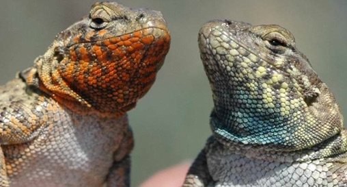
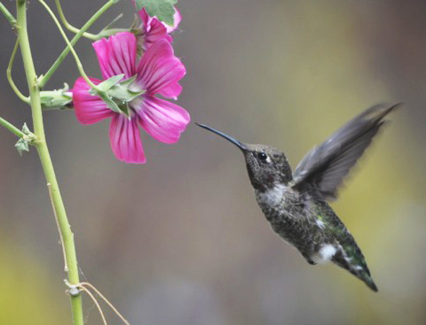
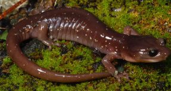
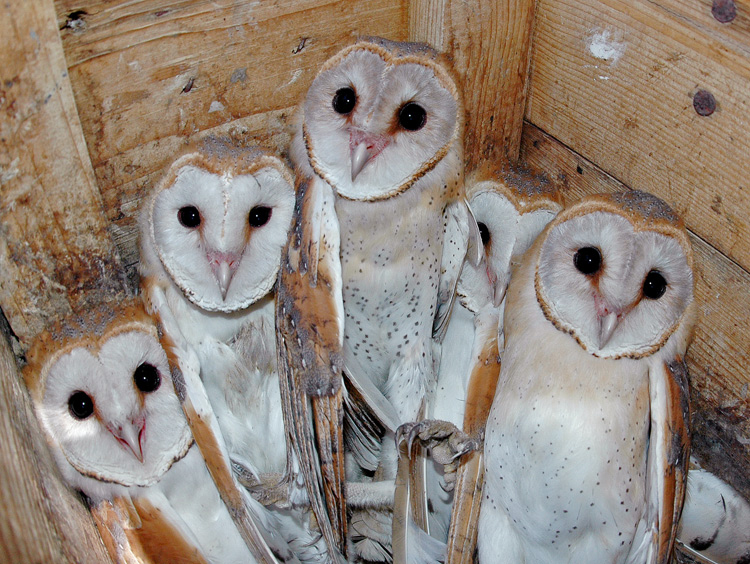

The Evolution and Maintenance of Polymorphism
 For many years I have studied the side-blotched lizard, Uta stansburiana, a species that is polymorphic for three male mating strategies characterized by distinct throat colors and mating behaviors. The mating strategies are maintained by an evolutionary analog of the rock-paper-scissors game wherein orange males take territory from blue males because they are more aggressive, yellow males beat orange males by sneaking onto their large territories, and blue males beat yellow males by closely guarding their mates. I have determined the genetic basis of this polymorphism through a large genomic study, which revealed that the color morphs differ in variants at a single gene called sepiapterin reductase. I have also used population genetic models to better understand how the polymorphism is maintained. In addition, I have studied the geographic variation of the side-blotched lizard polymorphism and determined that it has been maintained for millions of years, but can sometimes be lost. I also have investigated other color polymorphisms to better understand their genetics and maintenance. This work was done in collaboration with the labs of Barry Sinervo at U.C. Santa Cruz and Rasmus Nielsen at U.C. Berkeley.
For many years I have studied the side-blotched lizard, Uta stansburiana, a species that is polymorphic for three male mating strategies characterized by distinct throat colors and mating behaviors. The mating strategies are maintained by an evolutionary analog of the rock-paper-scissors game wherein orange males take territory from blue males because they are more aggressive, yellow males beat orange males by sneaking onto their large territories, and blue males beat yellow males by closely guarding their mates. I have determined the genetic basis of this polymorphism through a large genomic study, which revealed that the color morphs differ in variants at a single gene called sepiapterin reductase. I have also used population genetic models to better understand how the polymorphism is maintained. In addition, I have studied the geographic variation of the side-blotched lizard polymorphism and determined that it has been maintained for millions of years, but can sometimes be lost. I also have investigated other color polymorphisms to better understand their genetics and maintenance. This work was done in collaboration with the labs of Barry Sinervo at U.C. Santa Cruz and Rasmus Nielsen at U.C. Berkeley.
Example Papers
- The genetics, evolution, and maintenance of a biological rock-paper-scissors game.
- Selective loss of polymorphic mating types is associated with rapid phenotypic evolution during morphic speciation.
- Alternative mating strategies and the evolution of sexual size dimorphism in the side-blotched lizard, Uta stansburiana: a population-level comparative analysis.
- Models of density-dependent genic selection and a new rock-paper-scissors social system.
- The genetic basis of adaptation following plastic changes in coloration in a novel environment.
Genetics and Plasticity of Adaptive Traits
 I have worked on two projects to that have studied the genetic basis and plasticity of adaptive phenotypes. This work was in collaboration with Rasmus Nielsen at U.C. Berkeley. One project was to test a theory that phenotypic plasticity is important for initial survival in a new environment and then natural selection will subsequently adapt organisms to the new habitat. I found that a population of side-blotched lizards living on a lava flow had ancestral plasticity in their coloration (photo on right), but also had genetic changes in genes that affect melanin production that adapted them to the lava environment. Plasticity aided the initial survival of the lava lizards, which then acquired genetic adaptations to their novel environment.
I have worked on two projects to that have studied the genetic basis and plasticity of adaptive phenotypes. This work was in collaboration with Rasmus Nielsen at U.C. Berkeley. One project was to test a theory that phenotypic plasticity is important for initial survival in a new environment and then natural selection will subsequently adapt organisms to the new habitat. I found that a population of side-blotched lizards living on a lava flow had ancestral plasticity in their coloration (photo on right), but also had genetic changes in genes that affect melanin production that adapted them to the lava environment. Plasticity aided the initial survival of the lava lizards, which then acquired genetic adaptations to their novel environment.
The second project was to determine the genetic basis of the throat color polymorphism in the side-blotched lizard, Uta stansburiana, that I described above. This project revealed that orange morphs are genetically distinct from the other two color morphs. Blue and yellow morphs are genetically similar and their differences arise because they can alter their phenotype depending on their environment. Males that cannot acquire a territory express yellow coloration and sneak, but if they are able to get a territory they express blue coloration and guard their mates. Population genetic models revealed that this plasticity helps maintain the color polymorphism and keep it from being lost over time.
Example Papers
- The genetic basis of adaptation following plastic changes in coloration in a novel environment.
- The genetics, evolution, and maintenance of a biological rock-paper-scissors game.
Sexual Selection
 I have investigated how differences in the levels of sexual selection experienced by a species may affect the patterns of genetic diversity observed across the genome. Population genetics theory proposes that variance in male reproductive success will lower the effective population size of DNA predominantly transmitted by males. This will cause the sex chromosomes to exhibit different levels of genetic diversity relative to the autosomes under monogamous, polygynous, and polyandrous mating systems. To test this idea, I surveyed levels of genetic diversity in phylogenetically independent pairs of birds with different mating systems. I worked on shorebirds, which have exceptionally diverse mating systems that have long been of interest to biologists (the illustration to the right is of a shorebird called a ruff is from Darwin’s book: The Descent of Man and Selection in Relation to Sex). I found that most polygynous species had relatively reduced genetic variation on their sex chromosomes as compared to monogamous species. These results suggest that measuring the differences in genetic diversity between the sex chromosomes and autosomes can contribute to understanding the long-term history of sexual selection experienced by a species. I did this work as a postdoc in the lab of Hans Ellegren at Uppsala University.
I have investigated how differences in the levels of sexual selection experienced by a species may affect the patterns of genetic diversity observed across the genome. Population genetics theory proposes that variance in male reproductive success will lower the effective population size of DNA predominantly transmitted by males. This will cause the sex chromosomes to exhibit different levels of genetic diversity relative to the autosomes under monogamous, polygynous, and polyandrous mating systems. To test this idea, I surveyed levels of genetic diversity in phylogenetically independent pairs of birds with different mating systems. I worked on shorebirds, which have exceptionally diverse mating systems that have long been of interest to biologists (the illustration to the right is of a shorebird called a ruff is from Darwin’s book: The Descent of Man and Selection in Relation to Sex). I found that most polygynous species had relatively reduced genetic variation on their sex chromosomes as compared to monogamous species. These results suggest that measuring the differences in genetic diversity between the sex chromosomes and autosomes can contribute to understanding the long-term history of sexual selection experienced by a species. I did this work as a postdoc in the lab of Hans Ellegren at Uppsala University.
I have also studied variation among populations of side-blotched lizard in sexual size dimorphism, which is a trait that can be strongly influenced by sexual selection. I studied whether changes in sexual dimorphism were associated with the loss of the mating strategy polymorphism in some populations. I discovered that all polymorphic populations had male-biased sexual size dimorphism while some monomorphic populations had no sexual dimorphism or female-biased sexual dimorphism. Variation in sexual dimorphism among populations polymorphic for multiple male morphs was associated with changes in male size, which suggested that male-male competition shapes size dimorphism in these populations. In contrast, changes to sexual dimorphism in monomorphic populations were correlated with changes in female size and clutch size, which suggests that selection on female fecundity has altered size in these populations. This study showed that multiple selective forces are likely to shape sexual dimorphism within a species and that shifts in levels of polymorphism can have large effects on trait evolution.
Example Papers
- Alternative mating strategies and the evolution of sexual size dimorphism in the side-blotched lizard, Uta stansburiana: a population-level comparative analysis.
- The genomic signature of sexual selection in the genetic diversity of the sex chromosomes and autosomes.
Speciation
 I have conducted research about how polymorphism may contribute to speciation. These studies have been conducted on the side-blotched lizard, Uta stansburiana, a species that is polymorphic for three different genetically determined male mating strategies characterized by distinct throat colors and mating behaviors. I found that although the polymorphism has been maintained for millions of years, it has also been lost eight independent times. Polymorphism loss was associated with rapid phenotypic evolution, which could promote species formation. Consistent with this idea, I found some evidence of reduced fertility between a dimorphic population and a nearby trimorphic population.
Example Papers
- Selective loss of polymorphic mating types is associated with rapid phenotypic evolution during morphic speciation.
- Rapid formation of reproductive isolation between two populations of Side-Blotched lizards, Uta stansburiana.
Adaptation and Diversification of Hummingbirds and Sunbirds
I have been studying convergent genetic and phenotypic evolution in hummingbirds and sunbirds, which are two replicate radiations of nectarivorous birds. This is a collaboration with the labs of Jim McGuire, Rauri Bowie, and Robert Dudley at U.C. Berkeley. The goals of the project are to: 1) generate species-level phylogenies for all hummingbird and sunbird species using genomic data, 2) identify convergent genetic changes in candidate genes related to the ecology of these two bird groups, and 3) conduct targeted tests of the physiology and behavior of select species to better understand how genetic changes have impacted organismal function.
Example Papers
- Molecular phylogenetics and the diversification of hummingbirds.
- Myo-inositol is a key regulator of avian metabolism: From mechanisms to seasonal behavior.
- The proof is in the plumage: a method for detecting dietary ethanol exposure in birds by testing for ethyl glucuronide in feathers.
- Hummingbird ingestion of low-concentration ethanol within artificial nectar.
Phylogeography and Phylogenetics
 I have studied the phylogeography of the side-blotched lizard (Uta stansburiana) to better understand how its mating strategies have evolved. I have also worked with Sean Reilly to study the phylogeography of the arboreal salamander (Aneides lugubris, photo on right) to better understand its evolutionary history and the threats it may face from climate change. I have worked with Simon Scarpetta to reconstruct the phylogenetic relationships of two groups of lizards, the iguanas and the dragon lizards. I have also worked with Jim McGuire to reconstruct the evolutionary history of hummingbirds. Finally, I have worked with Hans Ellegren at Uppsala University to study the best genetic markers and sampling strategies for reconstructing species trees.
Example Papers
- Alternative mating strategies and the evolution of sexual size dimorphism in the side-blotched lizard, Uta stansburiana: a population-level comparative analysis.
- An integrative approach to phylogeography: Investigating the effects of ancient seaways, climate, and historical geology on multi-locus phylogeographic boundaries of the Arboreal Salamander (Aneides lugubris).
- The evolutionary history of dragon lizards (Squamata: Agamidae) revealed by phylogenomics.
- Iguanas rafted more than 8,000 km from North America to Fiji.
- Molecular Phylogenetics and the Diversification of Hummingbirds.
- Sampling strategies for species trees: the effects on phylogenetic inference of the number of genes, number of individuals, and whether loci are mitochondrial, sex-linked, or autosomal.
The Microbiota of Wild Birds
 I have worked on many studies aimed at linking the behavioral ecology of wild species of birds to their microbial communities. This was part of a larger project aimed at better understanding disease transmission in birds, which can carry diseases that impact human health. Our studies of their microbiota provided a way to understand how bacteria spread among birds and their environments. The project was done in collaboration with the labs of Rauri Bowie and Wayne Getz at U.C. Berkeley, Pauline Kamath at the University of Maine, Ran Nathan at the Hebrew University of Jerusalem, and Motti Charter at the University of Haifa. I took the lead in the studies of barn owls and their microbiota. I found that the microbiota of adult owls differed between males and females and was correlated with the movement behavior of the owls. I found that the social environment of nestling owls shaped their microbiota and that their microbiota was more similar to their mother than to their father.
Example Papers
- Social, environmental, and developmental factors affect the microbiota of barn owls (Tyto alba) in a cross-fostering experiment
- Movement ecology and sex are linked to barn owl microbial community composition
- High-throughput sequencing for examining Salmonella prevalence and pathogen-microbiota relationships in barn swallows
- Drivers of change and stability in the gut microbiota of an omnivorous avian migrant exposed to artificial food supplementation
- Migration status and microbiome composition: a comparative study in sympatrically co-occurring migrants and residents
Genomics and Diversification of Frogs
 I am now working with the labs of Rebecca Tarvin at U.C. Berkeley and Adam Stuckart at the University of Houstan on a project to determine the genes that give rise to color and pattern differences in poison frogs. I have previously worked on two other frog projects. One was to study transposable element evolution in the strawberry poison frog. The other was to study the evolution of thermal tolerance in frogs living at different elevations.
I am now working with the labs of Rebecca Tarvin at U.C. Berkeley and Adam Stuckart at the University of Houstan on a project to determine the genes that give rise to color and pattern differences in poison frogs. I have previously worked on two other frog projects. One was to study transposable element evolution in the strawberry poison frog. The other was to study the evolution of thermal tolerance in frogs living at different elevations.